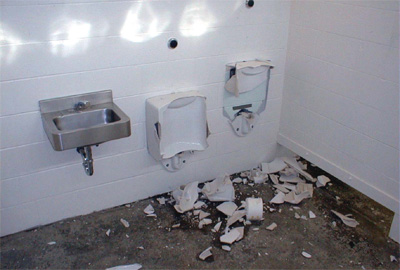
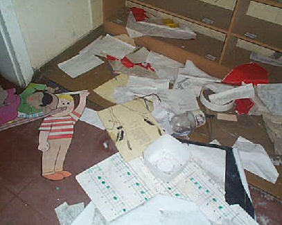
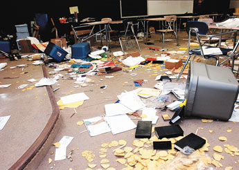
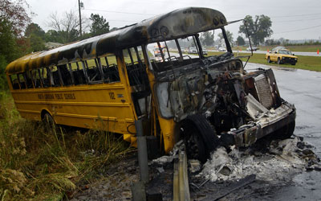
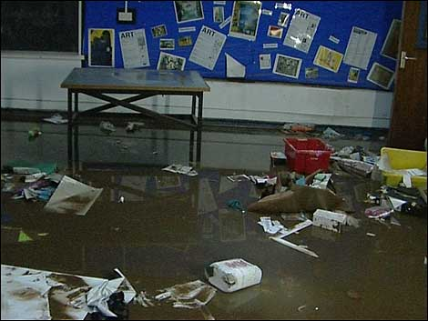
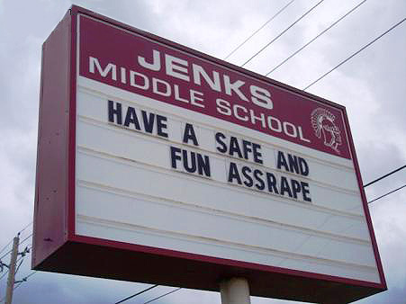
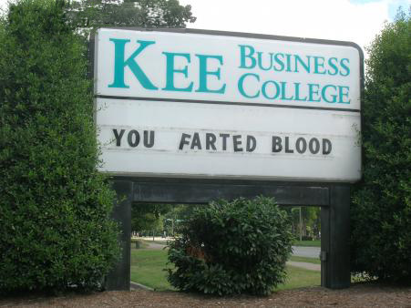
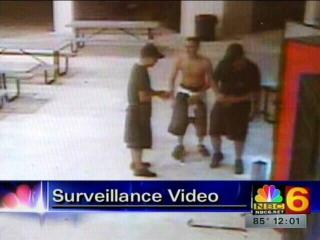
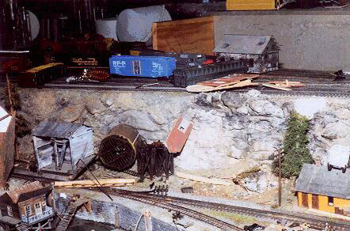

|
 School VandalismYoung people! Gotta love 'em. Stuck in classrooms all day long with no money, no job, no car, no cell phone, no cool clothes, no fancy shoes, no life experience, no art skills, no future prospects -- and no particularly clever virals to blog, vlog, slog, upload to YouTube or post on Flickr. As a generation, about the only thing they do have going for them is a big ol' baseball bat and this here box of strike-anywhere matches. Is it any wonder then that school vandalism is on the rise? It's a meme to the extreme! Won't you catch our spirit? School vandalism, for the purposes of this discussion, is willful, malicious damage to property or school grounds which is so extensive in scope that parents and teachers rally together and the police are called in to investigate. Proper vandalism to a single classroom, gymnasium, or computer lab has rippling effects throughout an entire community -- from needy insurance claims to accusations of district mismanagement. There is also high drama: a teenage vandal who enthusiastically tells his friends how he burned down the high school must steadfastly endure Shakespearean levels of inner turmoil as the cops start examining security camera footage or preparing DNA swabs for the entire student body. Drawing pink hearts on the inside of your locker with a glitter pen does not constitute school vandalism. The schoolhouse, in and of itself, is a prime target for vandalism -- way more so than a church, random office building or shopping mall. Schools are not only symbols of The Man's mandatory social order and middle-class values, they have the highest concentration of potential offenders in high-risk age groups who believe that public property belongs to nobody in particular. The United States has roughly 84,000 public schools, a third of which report one or more incidents of vandalism each year, for a grand total of 99,000 individual attacks. In the 1970s, damage to schools was estimated at $200 million, but by 1990 that number had climbed to $600 million. The actual number in 2006 is impossible to determine, since some school districts only classify "vandalism" as something which necessitates an insurance claim. In other districts, administrators are wary of reporting every case to the police out of fear that malicious crimes which instantly appear on local news services reflect poorly upon their management skills. For this reason, very few school vandals are ever apprehended, and even fewer are prosecuted. Vandalism on campus is the inevitable aftermath of a procedural term police call the school break-in, an act which can only take place when the facilities are closed: at night, on weekends, or holidays. Schools provide an eerie, frozen environment after hours, perfect for break-ins and glass smashery -- as do lonely bus yards. In January of 2006, the reward for information in a Dubuque, Iowa vandalism case grew to $3200, after KWWL News reported that over thirty school buses had their brake lines cut. Such brazen disregard for precious human cargo allows these particular crimes to ascend from felony criminal mischief to attempted murder. Incentive programs and reward systems which serve to "find out" who's responsible for schoolyard crimes have grown to $750 in Redmond, Washington, where schools regularly report windows broken with rocks or other projectiles, damaged doors, overturned tables and file cabinets, smashed trophy cases, and horrifically discharged fire extinguishers. Soda machines are popular targets of kick-overs in Maypearl, Texas. So is the music room, where in January of 2006 vandals punched holes in a set of drums, bent a saxophone into an un-tootable shape, smashed a guitar over a radiator, snapped several flutes and clarinets clean in half, and snipped all eighty-eight strings in a grand piano -- to the tune of $40,000 in damages. Thankfully, the school marching band now sounds more like Negativland. The motivating factors behind school-related crimes have an official language and three distinct flavors, according to the U.S. Department of Justice. Nuisance break-ins. In which a youth breaks into a school, seemingly as an end to itself. Little serious damage, mostly exploratory as if to say, "Hey look, we got on the roof." Usually nothing of value is taken. Professional break-ins. In which offenders use a high level of force or skill to enter the school, break into storage rooms containing expensive equipment and remove bulky items from the scene for the purposes of selling or exchanging for drugs. Malicious break-ins. In which significant, lasting damage to the school's interior or infrastructure is sustained. What kind of school vandal are you? Statistically you're young and male, and still in junior high. The impulse to commit traditional break-ins will grow less frequent as you enter high school, where the bullshit really begins and you're ready to graduate toward more fulfilling personal quests like arson and grand theft. As a vandal, your pathology would very likely include poor performance in class. Sometimes you're truant, and you probably have a few busts on your record which resulted in suspension, expulsion, or cigarette smoking awareness workshops. Yes indeed, you're a misunderstood night-time crusader in a bat cape, fighting against the hypocritical injustices of an evil adult world beyond your control. You might even have an inadequate understanding or appreciation of the impact your destructive impulses has upon others. You're really only concerned about real-world, right-now consequences to yourself. Behaviorally speaking, you're no more likely to be emotionally disturbed than your neighborhood peers or long-distance IRC pals. Nor are you more openly critical of your instructors' teaching methods. You just like stuffing entire rolls of paper towels down the boys' toilet as soon as the sun goes down. Or cracking open a rooftop skylight early Saturday morning and firing hundreds of neon paint balls into the freshly-carpeted multipurpose facility. There's no "deep void" in your soul which can only be filled by stealing an Intel-based MacBook Pro from the computer lab -- you just need a Core Duo if you're ever going to be taken seriously as a podcaster. Juvenile lawyers call that kind of rational thinking acquisitive vandalism, one of several clinically-defined classes of school-related crime. Ideological vandalism, on the other hand, is oriented toward a social or political cause, such as a protest when Cokes are no longer available from school vending machines. There is vindictive vandalism, such as setting fire to your principal's office in revenge after he made you sit on a bench during lunch -- and there's malicious vandalism, so named because of its viciousness and senseless nature. Malicious school vandalism is the most difficult for a community to understand. A more creative and visible form of vandalism is hilarious vandalism, such as rearranging the plastic snap-on letters on a school billboard to deliver alternate or misleading communication at the student body. Such cultural jamming can last for several hours without anyone in authority really noticing -- or longer, if your discreet wordsmithery is applied on or before a three-day weekend. Tactical vandalism is the opposite extreme. It seeks to accomplish goals such as getting a school cancelled or shut down completely. In Jacksonville, Florida, students at First Coast High were forced to attend classes on the lawn after vandals superglued shut one hundred and twenty of the school's doors. The prank was discovered by a custodian around 6:00am. "They not only did all the classroom doors, of which there are at least 85," reported one official to First Coast News, "but they did every door inside the building." Each sealed lock needed to be replaced, for a total cost of several thousand dollars. Vandals at Eminence High School in Indianapolis, Indiana were not as successful, even though their work was twice as complicated. According to WRTV6 News, teen pranksters packed tons of smashed eggs, Dog Shit, cow shit, and dead animals like rabbits and squirrels up against the school's windows. The vandalism delayed the opening of the school for one hour, and forced the cancellation of a senior field trip to the zoo. Student body president Kyle Malott courageously spoke out against the perpetrators, calling their actions "disgusting" and describing how sickened he felt to see all the teachers cleaning it up. Police later identified Kyle as their main suspect, bringing down nine additional seniors and two underclassmen. Traditionally, school vandalism is a hobby anyone can perform without risking the immediate condemnation of other students. You can even be a grown-up! Adult vandals are far more interested in securing high-value items for personal use or resale on eBay than scratching crude pictures of horse dicks on the chalkboard. As schools grow more equipped to accommodate hookups to the netterweb, equipment such as high-definition digital cameras, VCRs, DVD players, and studio recording gear are the latest and greatest targets for theft or defacement. Meanwhile, advancements in motion sensors, intruder alarms, heat detection systems, electronic barriers, deadbolt locking mechanisms and surveillance video cameras continue to evolve along similar timelines. So what kind of vandalism is right for you? It's not a rhetorical question. In 1978, Peter D. Vestermark and Seymore D. Blauvelt, Jr. published Controlling Crime in the School: A Complete Security Handbook for Administrators. This popular reference illustrates a two-dimensional array which factors the perceived social costs of school vandalism against age-old financial data. The product is a potpourri of four distinct categories. Type IV. Low Social Costs and Low Monetary Costs. Turfs and tags. "Turfing" describes damage to school grounds caused by vehicles being driven across lawns or fields, leaving deep tread marks. Combine this with a tag or conventional graffiti art, or a single broken window, and you're a Type IV offender. Type III. High Social Costs but Low Monetary Costs. Hate-motivated or gang-related graffiti. The killing of classroom animals. Not recommended for beginners. Type II. Low Social Costs but High Monetary Costs. Many broken windows, cherry bombs dropped in a toilet, or vandalism to vending machines. Type I. High Social Costs and High Monetary Costs. The destruction of a media center or computer lab. The disruption or removal of school records, hundreds of frosty chocolate milkshakes poured into a swimming pool, or a form of vandalism so extreme that the school is closed and the surrounding community outraged or fearful.
The club was founded in early 1983 to promote the hobby of model railroading by incorporating scenic details familiar to California. In fact, the entire museum is housed inside an authentic 1941 Pullman-Standard passenger car over eighty feet long. Sometime between Christmas Day and New Year's Eve, 1995, trainspotting vandals removed the Eastern door port-hole window of the museum, crawled through the opening into the railroad car, and -- just like Katamari Damacy -- rolled over everything in sight, smashing and crunching toy trains, demolishing or reducing to scrap massive iron bridges and steel water tanks, razing entire acres of faux forest with swift kicks, laying to waste rural neighborhoods, and obliterating from the map sleepy-town communities with big stompy shoes. You read that correctly: vandals broke into a model railroad car museum modeled inside an authentic railroad car to smash up models of railroad cars. It's unknown if the model railroad car museum sustained any damage to its recursively-modeled railroad car museum, or if the miniature-modeled railroad cars inside the miniature-modeled railroad car museum were unharmed. Rather than trying to restore the museum piece by piece from the rubble, members decided to tear the old layout out completely and renovate the passenger car by constructing a new one from scratch. It's a heartbreaking fact that the injuries of vandalism often last a lifetime. Only by putting a more human face on the walking wounded of the Antelope Valley Model Railroad Club can one more easily empathize with the tragic victims of vandalism -- school or otherwise. |
 When
vandals
grow weary of dismantling their school, they often migrate directly through
your backyard. The Antelope Valley Union High School District in Lancaster,
California supervises ten unique high schools within vandalously close
proximity to the Antelope Valley Model Railroad Club.
When
vandals
grow weary of dismantling their school, they often migrate directly through
your backyard. The Antelope Valley Union High School District in Lancaster,
California supervises ten unique high schools within vandalously close
proximity to the Antelope Valley Model Railroad Club.